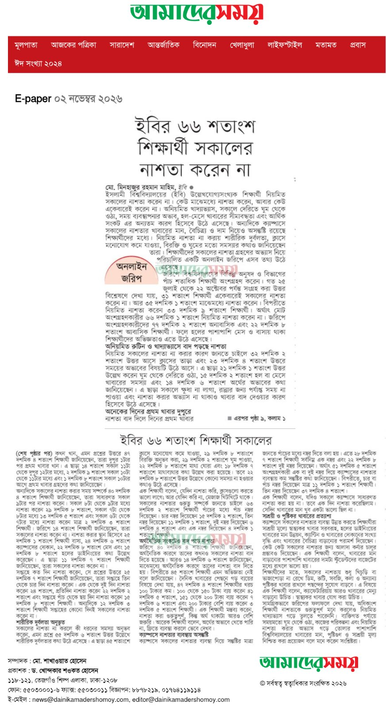

Your phone can translate this page into almost any language for free. Chrome on Android: open the menu (three dots) and tap Translate. iPhone Safari: tap the aA button, then Translate. The result is automatic and may contain mistakes. Or open it in Google Translate.
ইবির ৬৬ শতাংশ শিক্ষার্থী নিয়মিত নাস্তা করেন না
66 percent of students at IU do not eat breakfast regularly

ইসলামী বিশ্ববিদ্যালয়ের (ইবি) উল্লেখযোগ্যসংখ্যক শিক্ষার্থী নিয়মিত সকালের নাস্তা করেন না। কেউ মাঝেমধ্যে নাস্তা করেন, আবার কেউ একেবারেই করেন না। অনিয়মিত খাদ্যাভ্যাস, সকালে দেরিতে ঘুম থেকে ওঠা, সময় ব্যবস্থাপনার অভাব, হল-মেসে খাবারের সীমাবদ্ধতা এবং আর্থিক সংকট এর অন্যতম কারণ হিসেবে উঠে এসেছে। অন্যদিকে, ক্যাম্পাসে সকালের নাস্তার খাবারের মান, বৈচিত্র্য ও দাম নিয়েও অসন্তুষ্টি রয়েছে শিক্ষার্থীদের মধ্যে। নিয়মিত নাস্তা না করার ফলে শারীরিক দুর্বলতা, ক্লাসে মনোযোগ কমে যাওয়া, বিরক্তি ও ঘুমের মতো সমস্যার কথাও জানিয়েছেন তাঁরা।
শিক্ষার্থীদের সকালের নাস্তা গ্রহণের অভ্যাস নিয়ে পরিচালিত এক অনলাইন জরিপে এসব তথ্য উঠে এসেছে। জরিপে বিশ্ববিদ্যালয়ের বিভিন্ন অনুষদ ও বিভাগের প্রায় পাঁচ শতাধিক শিক্ষার্থী অংশগ্রহণ করেছেন। গত ২৫ জুলাই থেকে ২২ অক্টোবর পর্যন্ত সংগৃহীত উত্তর বিশ্লেষণে দেখা যায়, ৩১ শতাংশ শিক্ষার্থী একেবারেই সকালের নাস্তা করেন না। আর ৩৫ দশমিক ১ শতাংশ মাঝেমধ্যে নাস্তা করেন। বিপরীতে, নিয়মিত নাস্তা করেন ৩৩ দশমিক ৯ শতাংশ শিক্ষার্থী। অর্থাৎ, মোট অংশগ্রহণকারীর ৬৬ দশমিক ১ শতাংশ নিয়মিত নাস্তা করেন না।
জরিপে অংশগ্রহণকারীদের ৭৭ দশমিক ২ শতাংশ অনাবাসিক এবং ২২ দশমিক ৮ শতাংশ আবাসিক শিক্ষার্থী। ফলে হলের পাশাপাশি মেস ও বাসায় থাকা শিক্ষার্থীদের অভিজ্ঞতাও এতে উঠে এসেছে।
অনিয়মিত রুটিন ও খাদ্যাভ্যাসে বাদ পড়ছে নাস্তা
নিয়মিত সকালের নাস্তা না করার কারণ জানতে চাইলে ৩২ দশমিক ২ শতাংশ উত্তর উল্লেখে ক্লাসের তাড়া এবং ২৩ দশমিক ৪ শতাংশ উত্তর উল্লেখে সময়ের অভাবের বিষয়টি উঠে এসেছে। এ ছাড়া ২১ দশমিক ১ শতাংশ উত্তর উল্লেখে ঘুম থেকে দেরিতে ওঠা, ১৫ দশমিক ২ শতাংশে হল বা মেসে খাবারের সমস্যা এবং ১৪ দশমিক ৬ শতাংশে অর্থের অভাবের কথা জানিয়েছেন শিক্ষার্থীরা।
এ ছাড়া সকালে ক্ষুধা না লাগা, রান্নার জন্য পর্যাপ্ত সময় না পাওয়া এবং নাস্তা করার অভ্যাস না থাকাও খাবার বাদ দেওয়ার কারণ হিসেবে উঠে এসেছে। এসব প্রশ্নে একাধিক উত্তর দেওয়ার সুযোগ থাকায় শতাংশগুলো কারণ উল্লেখের অনুপাত নির্দেশ করে।
এক শিক্ষার্থী তাঁর অভিজ্ঞতা তুলে ধরে বলেন, “শহর থেকে বাসে আসতেই ক্লাসের সময় হয়ে যায়। নাস্তা করতে গিয়ে একটু দেরিতে ঢুকলেই শিক্ষকদের কাছে অনেক সময় কথা শুনতে হয়। তাই নাস্তা না করতে না করতে এখন এটাই আমার ভয়ানক বদভ্যাসে রূপ নিয়েছে। আমি ভুক্তভোগী।”
অনেকের দিনের প্রথম খাবার দুপুরে
নাস্তা বাদ দিলে দিনের প্রথম খাবার কখন খান, এমন প্রশ্নের উত্তরে ৪৭ দশমিক ৪ শতাংশ শিক্ষার্থী জানিয়েছেন, তাঁরা দুপুর ১টার পরে প্রথম খাবার খান। এ ছাড়া ১৪ শতাংশ সকাল ১১টা থেকে দুপুর ১২টার মধ্যে, ২ দশমিক ৯ শতাংশ সকাল ১০টা থেকে ১১টার মধ্যে এবং ১ দশমিক ৮ শতাংশ সকাল ১০টার আগে প্রথম খাবার গ্রহণের কথা জানিয়েছেন।
অন্যদিকে, সকালের নাস্তা করার সময় সম্পর্কে ৪০ দশমিক ৪ শতাংশ শিক্ষার্থী জানিয়েছেন, তাঁরা সাধারণত সকাল ৯টার পরে নাস্তা করেন। সকাল ৮টা থেকে ৯টার মধ্যে নাস্তা করেন ২৯ দশমিক ৮ শতাংশ, সকাল ৭টা থেকে ৮টার মধ্যে ১৩ দশমিক ৫ শতাংশ এবং সকাল ৬টা থেকে ৭টার মধ্যে নাস্তা করেন মাত্র ২ দশমিক ৩ শতাংশ শিক্ষার্থী। জরিপে ১৪ শতাংশ শিক্ষার্থী জানিয়েছেন, তাঁরা সকালের নাস্তা করেন না।
নাস্তা করার স্থান হিসেবে ২৫ দশমিক ১ শতাংশ শিক্ষার্থী বাসা, ২৪ দশমিক ৬ শতাংশ ক্যাম্পাসের দোকান, ২২ দশমিক ৮ শতাংশ মেস এবং ১৫ দশমিক ৮ শতাংশ হলের ডাইনিংয়ের কথা উল্লেখ করেছেন। এ ছাড়া ১১ দশমিক ৭ শতাংশ শিক্ষার্থী জানিয়েছেন, তাঁরা সকালের নাস্তা করেন না।
সপ্তাহে কত দিন নাস্তা করেন, সে প্রশ্নের উত্তরে ২৫ দশমিক ৭ শতাংশ শিক্ষার্থী জানিয়েছেন, তাঁরা সপ্তাহে তিন থেকে চার দিন নাস্তা করেন। এক থেকে দুই দিন নাস্তা করেন ২৪ শতাংশ, প্রতিদিন নাস্তা করেন ২২ দশমিক ২ শতাংশ এবং সপ্তাহে পাঁচ থেকে ছয় দিন নাস্তা করেন ১৫ দশমিক ৮ শতাংশ শিক্ষার্থী। অন্যদিকে, ১২ দশমিক ৩ শতাংশ শিক্ষার্থী সপ্তাহের কোনো দিনই সকালের নাস্তা করেন না।
নাস্তা না করলে অনুভূত হয় শারীরিক দুর্বলতা
সকালের নাস্তা না করলে কী ধরনের সমস্যা অনুভব করেন, এমন প্রশ্নে ৫৫ দশমিক ৬ শতাংশ উত্তর উল্লেখে শারীরিক দুর্বলতার কথা উঠে এসেছে। এ ছাড়া ৪৫ শতাংশে ক্লাসে মনোযোগ কমে যাওয়া, ২৯ দশমিক ৮ শতাংশে বিরক্তি অনুভব করা, ২৯ দশমিক ২ শতাংশে ঘুম পাওয়া, ২২ দশমিক ৮ শতাংশে মাথা ঘোরা এবং ১৮ দশমিক ৭ শতাংশে মাথাব্যথার কথা উল্লেখ করা হয়েছে। তবে ২২ দশমিক ৮ শতাংশ উত্তর উল্লেখে কোনো সমস্যা না হওয়ার কথাও উঠে এসেছে। এ প্রশ্নেও একাধিক উত্তর দেওয়ার সুযোগ ছিল।
এক শিক্ষার্থী বলেন, “যেদিন নাস্তা করি, ক্লাসগুলো করতে ভালো লাগে; আর যেদিন করি না, মেজাজ খিটখিটে থাকে।”
আরেক শিক্ষার্থীর ভাষ্য, “সকালের নাস্তা দিনের প্রথম ও গুরুত্বপূর্ণ খাবার। সেই খাবার অবহেলা করে বাদ দিলে মাথা ঘোরে, পড়াশোনায় মন বসে না, বিরক্ত লাগে, দুর্বল লাগে।”
ব্যক্তিগত অভিজ্ঞতা তুলে ধরে আরেক শিক্ষার্থী বলেন, “আমি ব্যক্তিগত অভিজ্ঞতা থেকে দেখেছি, নাস্তা না করলে শরীর দুর্বল লাগে এবং অনেক সময় প্রেসার লো হয়ে যায়। তাই সকালে নাস্তা করাটা অনেক জরুরি।”
সকালের নাস্তার গুরুত্ব সম্পর্কে জানতে চাইলে ৬৩ দশমিক ২ শতাংশ শিক্ষার্থী পাঁচের মধ্যে পাঁচ নম্বর দিয়েছেন। চার নম্বর দিয়েছেন ১৫ দশমিক ২ শতাংশ, তিন নম্বর দিয়েছেন ১১ দশমিক ১ শতাংশ, দুই নম্বর দিয়েছেন ৬ দশমিক ৪ শতাংশ এবং এক নম্বর দিয়েছেন ৪ দশমিক ১ শতাংশ শিক্ষার্থী। অর্থাৎ, অধিকাংশ অংশগ্রহণকারী সকালের নাস্তাকে গুরুত্বপূর্ণ বলে মনে করেন।
এক শিক্ষার্থী বলেন, “সকালের নাস্তাটা একজন স্টুডেন্টের জন্য খুবই গুরুত্বপূর্ণ, কারণ এটা মনোযোগ ধরে রাখতে সাহায্য করে।”
আরেক শিক্ষার্থীর মতে, “সকালে নাস্তা করলে সারাদিনের কাজের জন্য শক্তি পাওয়া যায় এবং পড়াশোনায় মনোযোগ বাড়ে। তবে অনেক সময় ক্লাসের তাড়া বা সকালে দেরিতে ঘুম থেকে ওঠার কারণে নিয়মিত নাস্তা করা হয় না।”
অর্থনৈতিক সংকটেও বাদ পড়ে নাস্তা
জরিপে ৪০ দশমিক ৪ শতাংশ শিক্ষার্থী জানিয়েছেন, অর্থনৈতিক কারণে তাঁদের কখনো সকালের নাস্তা বাদ দিতে হয়েছে। আরও ১৪ দশমিক ৬ শতাংশ জানিয়েছেন, মাঝেমধ্যে অর্থনৈতিক কারণে তাঁদের নাস্তা বাদ দিতে হয়। বিপরীতে, ৪৫ শতাংশ শিক্ষার্থী এমন অভিজ্ঞতা নেই বলে জানিয়েছেন।
দৈনিক খাবারের পেছনে গড় ব্যয়ের বিষয়ে দেখা যায়, ৪৭ দশমিক ৪ শতাংশ শিক্ষার্থীর খরচ ১০০ টাকার কম। ১০০ থেকে ১৫০ টাকা ব্যয় করেন ৪১ দশমিক ৫ শতাংশ, ১৫১ থেকে ২০০ টাকা ব্যয় করেন ৭ দশমিক ৬ শতাংশ এবং ২০০ টাকার বেশি ব্যয় করেন ৩ দশমিক ৫ শতাংশ শিক্ষার্থী।
এক শিক্ষার্থী মন্তব্য করেন, “নাস্তা করা গুরুত্বপূর্ণ, কিন্তু অর্থ থাকাটা আরও বেশি জরুরি।”
আরেক শিক্ষার্থী বলেন, “অর্থের অভাবে খেতে পারি না, ফ্রিতে ব্যবস্থা করলে ভেবে দেখব।”
ক্যাম্পাসের নাস্তার ব্যবস্থায় অসন্তুষ্টি
ক্যাম্পাসে সকালের নাস্তার ব্যবস্থা নিয়ে সন্তুষ্টির মাত্রা জানতে পাঁচের মধ্যে নম্বর দিতে বলা হয়। এতে ২৮ দশমিক ৭ শতাংশ শিক্ষার্থী সর্বনিম্ন এক নম্বর এবং ২২ দশমিক ৮ শতাংশ দুই নম্বর দিয়েছেন। অর্থাৎ, ৫১ দশমিক ৫ শতাংশ অংশগ্রহণকারী এক বা দুই নম্বর দিয়ে ক্যাম্পাসের নাস্তার ব্যবস্থায় কম সন্তুষ্টির কথা জানিয়েছেন। বিপরীতে, চার বা পাঁচ নম্বর দিয়েছেন মাত্র ১১ দশমিক ১ শতাংশ শিক্ষার্থী। তিন নম্বর দিয়েছেন ৩৭ দশমিক ৪ শতাংশ।
শিক্ষার্থীদের উন্মুক্ত মতামতে ক্যাম্পাসে স্বাস্থ্যকর খাবারের পর্যাপ্ততা, খাবারের মান, পরিচ্ছন্নতা, বৈচিত্র্য এবং শিক্ষার্থীদের সামর্থ্যের সঙ্গে সামঞ্জস্যপূর্ণ দাম নিশ্চিত করার দাবি উঠে এসেছে।
এক শিক্ষার্থী বলেন, “যদিও সকালে ক্যাম্পাসে সাধারণত নাস্তা করা হয় না। তবে একদিন নাস্তা করেছিলাম। সেদিন খাবারের মান খুব একটা ভালো ছিল না।”
আরেক শিক্ষার্থীর অভিযোগ, “হলের নাস্তা একদিন শুধু খেয়েছিলাম। খুব বাজে একটা অবস্থা, পরে আর খাইনি।”
কেন্দ্রীয় ক্যাফেটেরিয়ার খাবারের মান নিয়ে এক শিক্ষার্থী বলেন, “আমি একদিন সকালে নাস্তা করতে খিচুড়ি অর্ডার দিয়েছিলাম কেন্দ্রীয় ক্যাফেতে। খাবারের মধ্যে ঝিল বা পাথর পাওয়া গিয়েছিল।” তিনি খাবারের পরিচ্ছন্নতা নিয়েও উদ্বেগ প্রকাশ করেন।
সাশ্রয়ী ও পুষ্টিকর খাবারের প্রত্যাশা
ক্যাম্পাসে সকালের নাস্তার ব্যবস্থা উন্নত করতে শিক্ষার্থীরা সাশ্রয়ী মূল্যে স্বাস্থ্যকর খাবার সরবরাহ, হলের ডাইনিংয়ের খাবারের মান উন্নয়ন, ক্যান্টিন ও খাবারের দোকানের সংখ্যা বৃদ্ধি এবং খাবারের বৈচিত্র্য বাড়ানোর পরামর্শ দিয়েছেন। কেউ কেউ সকালের নাস্তার জন্য আলাদা কর্নার চালুর প্রস্তাবও দিয়েছেন।
এক শিক্ষার্থী বলেন, “খাবারের মান বাড়ানোর পাশাপাশি খাবারের দামটা স্টুডেন্টদের বাজেটের মধ্যে রাখলে ভালো হয়।”
আরেক শিক্ষার্থীর মতে, “বিশ্ববিদ্যালয়ের ক্যাম্পাসে স্বাস্থ্যকর, সুস্বাদু ও সাশ্রয়ী মূল্যের নাশতার ব্যবস্থা থাকলে শিক্ষার্থীরা নিয়মিত নাশতা করতে আরও উৎসাহিত হবে।”
শিক্ষার্থীদের মতে, সকালের নাস্তায় শুধু খিচুড়ি বা ভাজাপোড়া না রেখে ডিম, রুটি, সবজি, কলা ও অন্যান্য পুষ্টিকর খাবার রাখলে পছন্দের সুযোগ বাড়বে। এ বিষয়ে এক শিক্ষার্থী বলেন, “ক্যাফেটেরিয়ায় আরও খাবারের মেন্যু বাড়ানো উচিত। স্বাস্থ্যকর খাবার যোগ করা উচিত।” অন্য এক শিক্ষার্থীর ভাষ্য, “প্রতিদিন এক আইটেম খেতে ভালো লাগে না।”
এ ছাড়া সকালের নাস্তার গুরুত্ব সম্পর্কে সচেতনতা তৈরিতে প্রচার-প্রচারণা, সেমিনার ও স্বাস্থ্যসচেতনতামূলক কর্মসূচি আয়োজনের পরামর্শ দিয়েছেন শিক্ষার্থীরা। আর্থিকভাবে অসচ্ছল শিক্ষার্থীদের জন্য ভর্তুকি বা স্বল্পমূল্যে খাবারের ব্যবস্থা করার দাবিও জানিয়েছেন কেউ কেউ।
সামগ্রিকভাবে জরিপের ফলাফল বলছে, ইবি শিক্ষার্থীদের মধ্যে সকালের নাস্তা গ্রহণে অনিয়মের পাশাপাশি এ বিষয়ে সচেতনতারও সুযোগ রয়েছে। অধিকাংশ শিক্ষার্থী নাস্তাকে গুরুত্বপূর্ণ মনে করলেও নিয়মিত খাদ্যাভ্যাস গড়ে তুলতে পারেননি। ব্যক্তিগত পর্যায়ে সময়মতো ঘুম থেকে ওঠা, দিনের কাজ পরিকল্পনা করা এবং নিয়মিত নাস্তা করার অভ্যাস গড়ে তোলার পাশাপাশি বিশ্ববিদ্যালয়ের খাবারের মান, পুষ্টিগুণ ও সাশ্রয়ী মূল্য নিশ্চিত করা প্রয়োজন। শিক্ষার্থীদের সুস্থতা ও পড়াশোনায় মনোযোগ ধরে রাখতে ব্যক্তিগত সচেতনতা এবং ক্যাম্পাসে মানসম্মত খাবারের সহজলভ্যতা, দুই ক্ষেত্রেই গুরুত্ব দেওয়া জরুরি।